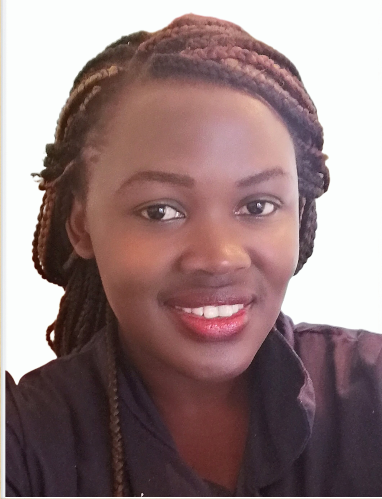

ABOUT ME
I am a well organised person, problem solver and a team player.
I work quickly and effectively in getting things built and working across the stack.
I am also an excellent communicator who thrives in bright and enthusiatic teams and i can work solo.
I follow form as well as function.
I know the aesthetics of effective design combined with application speed,security and reliability to create a great user experience.
When I'm not coding you can find me watching my favorite Netflix shows, Being a mom to my little princess or trying something new.
Get In Touch